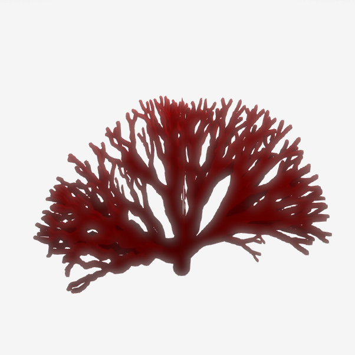

In botanica gli L-systems permettono di poter rappresentare la crescita di: alberi, alghe e qualsiasi elemento
naturale che si ramifica permettendo di unire biologia, la teoria dei linguaggi formali e la computer science contribuendo alla comprensione della struttura e
della forma delle piante, evidenziando i principi generativi che sottendono alla loro crescita e alla
loro organizzazione spaziale.
Questa disciplina si concentra sulla modellazione matematica e computazionale dei processi di sviluppo
delle piante, consentendo agli scienziati di simulare e comprendere la complessità delle strutture vegetali.
Attraverso questo algoritmo, i ricercatori sono in grado di esplorare una vasta gamma di
fenomeni botanici, come la morfogenesi delle foglie, la ramificazione dei rami, la crescita radicale e moltoaltro ancora.
Applicazione
Quattro studenti hanno sviluppato un progetto per generare in modo procedurale specie di coralli distinti utilizzando gli L-System.
Questo approccio è stato ispirato dalla struttura ricorsiva dei coralli, simile a quella degli alberi, che può essere rappresentata come una serie di cilindri che si restringono man mano che si allontanano dalla base.
Corallo ramificato con uno spessore iniziale di 6, angoli compresi tra 12 e 20 gradi e 6 livelli di ricorsione.

Corallo ramificato con uno spessore iniziale di 12, angoli compresi tra 12 e 20 gradi e 6 livelli di ricorsione.